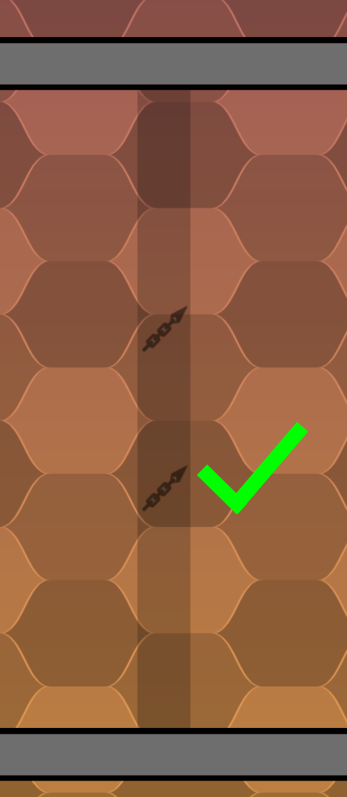
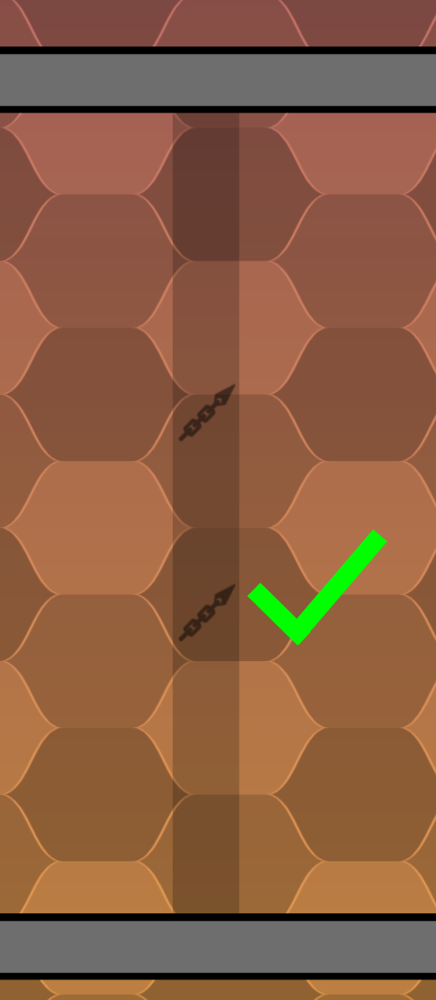

How to Map
Graphics Tutorials by gB. | Kintaro*
Mapping for DDraceNetwork
If you want to use special DDraceNetwork features, map using the DDraceNetwork Client, otherwise the DDRace client also works.
We have some nice tiles (ddnet-tiles) by 645654 & phacrum. Here's how to use them:

 

Testing your Map
- Download the DDraceNetwork Server (and Client)
- Run the included server, DDNet-Server.exe on Windows
- Connect to it using the IP address localhost:8303
- Hit F2 to open RCON and log in with the password rcon
- In RCON type change_map YourMapName to load your map
- If you want your server online setup port forwarding on your router